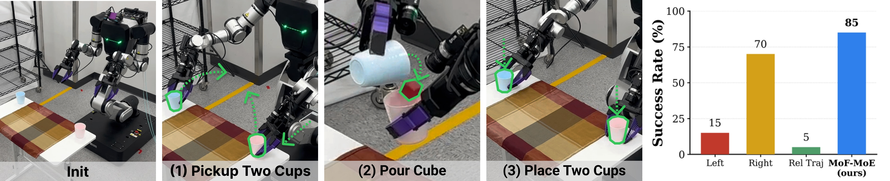

F1.
No single hand-designed frame wins across tasks, and frame choice creates up to a 15%p gap.
| Frame | Avg. | Best Tasks |
|---|---|---|
| Left | 55.6 | 2 |
| Right | 55.0 | 1 |
| Base | 61.0 | 5 |
| Rel Traj | 55.8 | 1 |
| Oracle / Worst | 63.8 / 48.8 | 15.0%p gap |
Multi-Frame Action Denoising for Bimanual Mobile Manipulation
Anonymous CoRL 2026 Submission
Abstract: Robotic manipulation is inherently multi-frame: local actions may be simple in an end-effector frame, while transport, upright-object handling, and whole-body coordination are better represented in a base-aligned frame. However, modern diffusion-based visuomotor policies typically commit to a single predefined action frame, forcing one denoiser to model action distributions that are often unnecessarily complex in that frame. We propose Mixture of Frames Policy (MoF), a diffusion policy that performs synchronized action denoising across multiple coordinate frames. MoF maintains a single canonical diffusion state, re-expresses it in several task-relevant frames, applies frame-specialized denoisers, and fuses their noise predictions back in the canonical frame. To make this possible for intermediate noisy diffusion states, we introduce a column-based 6D rotation representation within an SE(3) action parameterization that supports exact, differentiable frame transformations without requiring noisy rotations to lie on the SO(3) manifold. Across nine simulated bimanual manipulation tasks, we show that the best action frame is task-dependent and that MoF improves over oracle frame selection and standard Mixture-of-Experts (MoE) baselines. We further evaluate MoF on two real-world bimanual mobile manipulation tasks, demonstrating that it outperforms all constituent single-frame baselines.
F1.
| Frame | Avg. | Best Tasks |
|---|---|---|
| Left | 55.6 | 2 |
| Right | 55.0 | 1 |
| Base | 61.0 | 5 |
| Rel Traj | 55.8 | 1 |
| Oracle / Worst | 63.8 / 48.8 | 15.0%p gap |
F2.
| Method | Avg. |
|---|---|
| MoF-MoE | 66.8 |
| MoF-Ensemble | 65.9 |
| Oracle Frame | 63.8 |
| Single-Frame Ensemble | 55.9 |
| MoE-DP | 55.1 |
| DP | 50.3 |
F3.
| Ablation | Avg. | Delta |
|---|---|---|
| MoF-MoE | 66.5 | 0.0 |
| Rel Traj canonical | 64.0 | -2.5 |
| w/o Best Frame | 60.3 | -6.2 |
| w/o Aux | 58.5 | -8.0 |
| w/ Ortho Proj | 59.5 | -7.0 |




Pouring Task
Serving Task